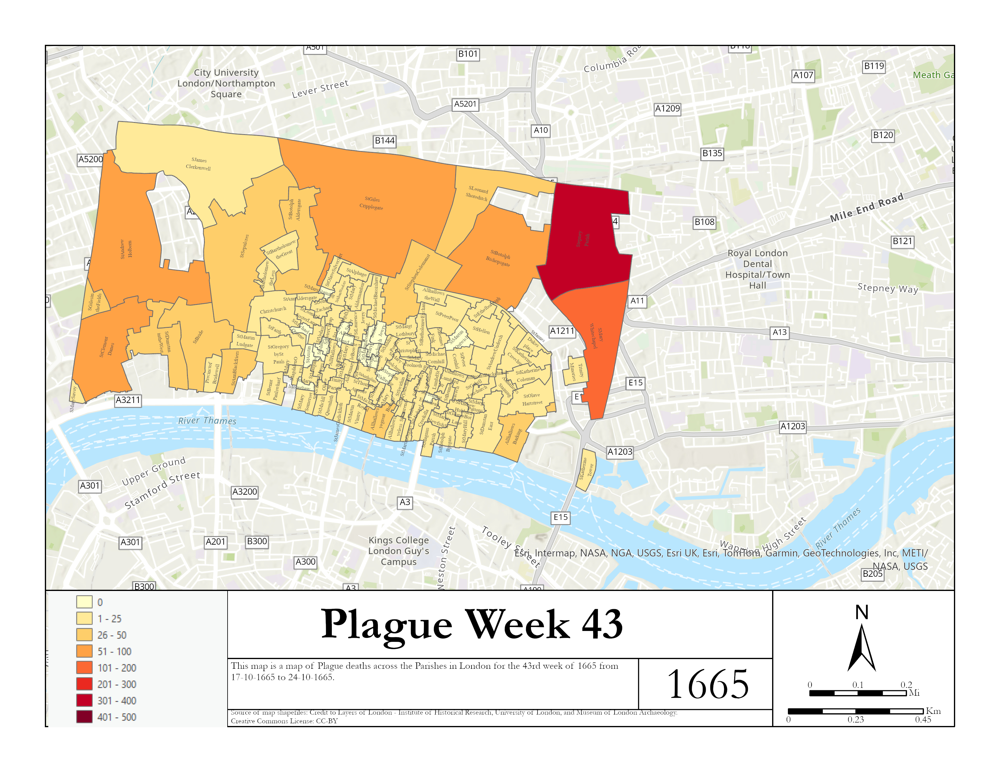

These are maps we have made out of shape files from the Layers of London - Institute of Historical Research, University of London, and Museum of London Archaeology. They were extracted with the help of Boris Michev of Pitt's University Library Digital Services by uploading the shapefiles to ArcGIS Pro and exporting the data as a .csv. A link to the Arc Gis Online story map is provided here
Choices were made in terms of the scope of the mapping. Due to time compression and displaying data we chose to start at week 25 instead of week 1. Not all parishes are represented because of historical data gaps and ineligible parishes. The map is made from a 1676 Morgan Map of London Parishes. The data comes from London's Dreadful Visitation collected in 1665-1666 during the London plague. The map collection is made up of two map sets. One set is total deaths for that week and the percent of plague deaths to total burials.
The general trends show plague peaking around weeks 40-45 rising in some parishes up to 700 deaths. The outer parishes saw the most deaths due to size but those in the walls saw the worst in terms of percent of total burials.